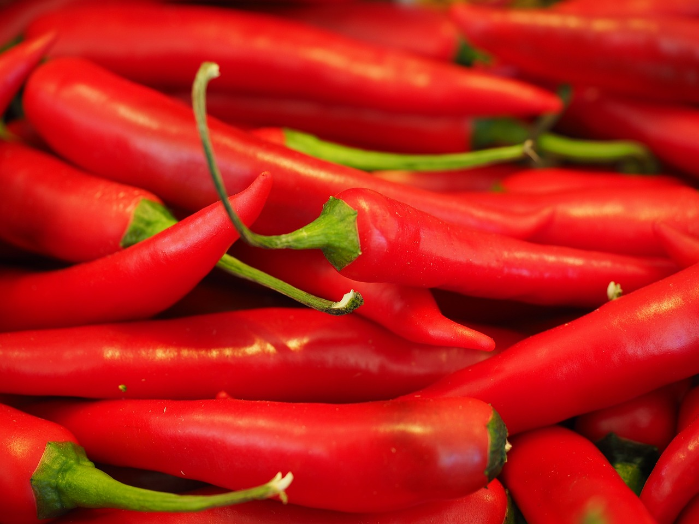

MY SKILLS

Design & Development
I started learning to code before some months because I wanted to make my own websites. Over time, I have gained a wealth of experience jostalk .

Hot Wings Challenge
But my best skill is actually in eating hot wings. I am the undisputed queen of hot wing challenges. Ghost Peppers and Carolina Reapers are my favourite snacks.